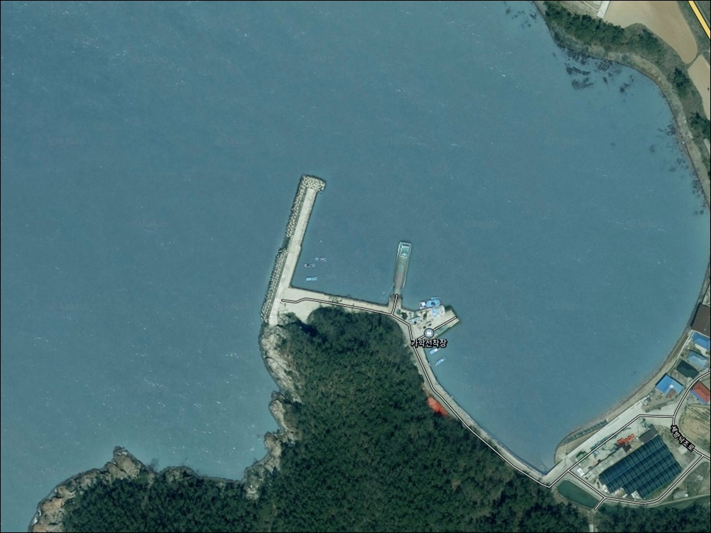
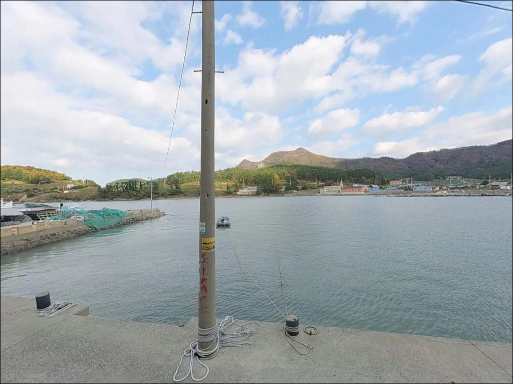
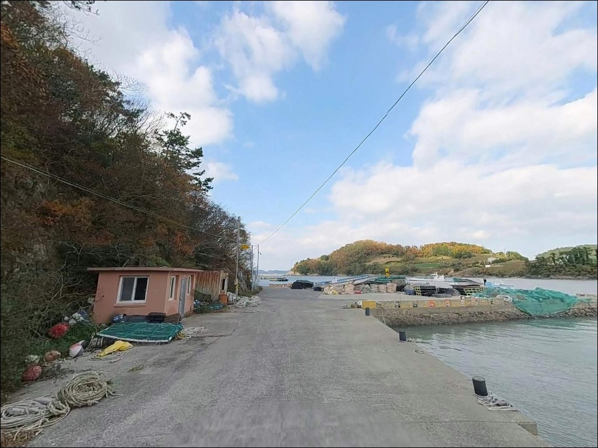
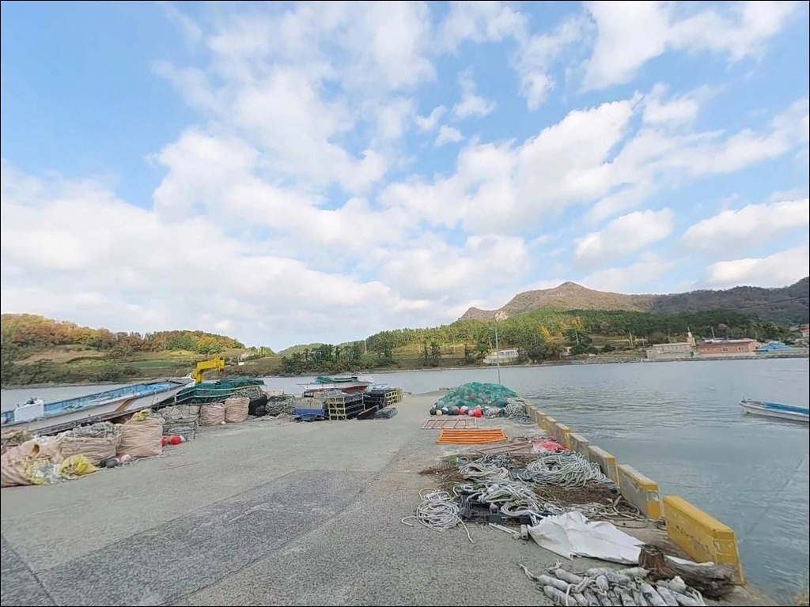
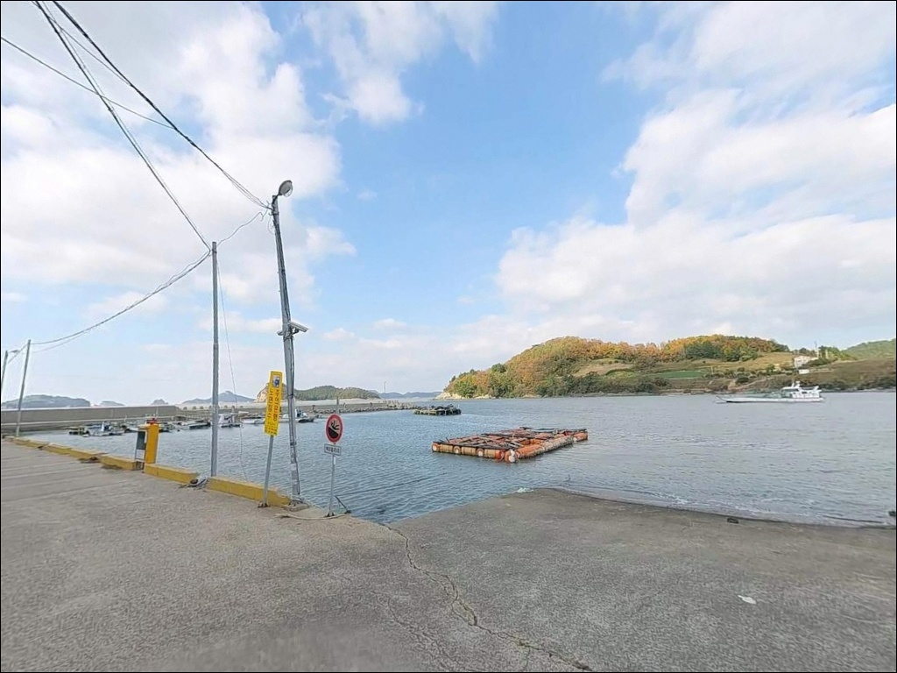
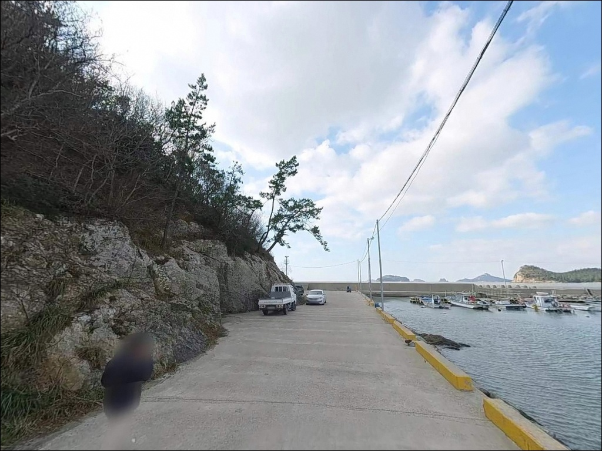
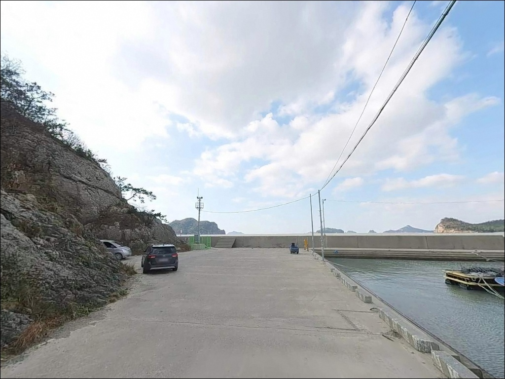
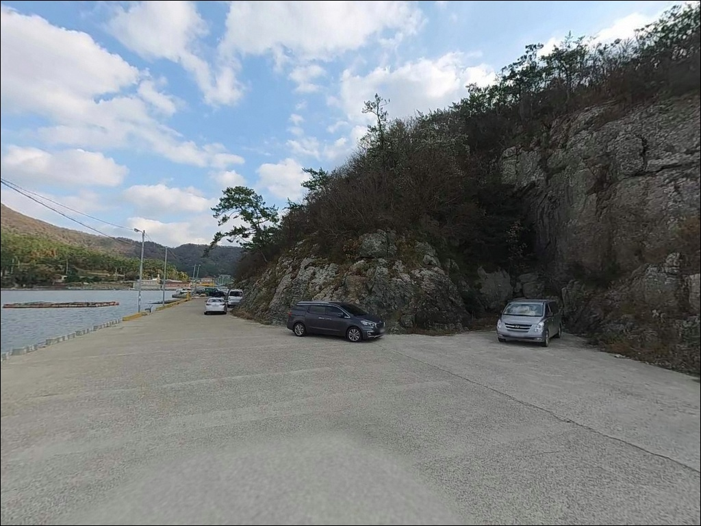
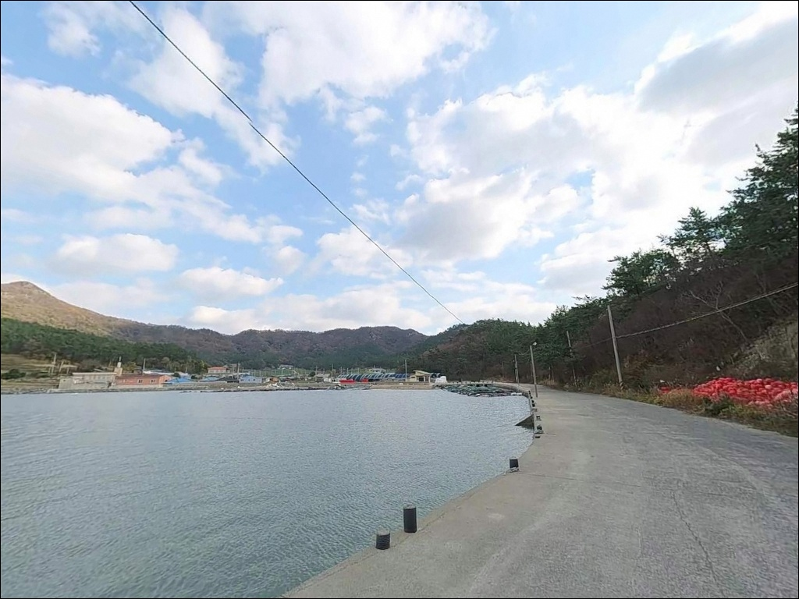

이 페이지에는 광고(제휴 링크 포함)가 있으며, 광고 링크를 통해 구매하면 운영자가 판매 수익 또는 수수료를 받을 수 있습니다. 포인트 사진: 카카오맵 스카이뷰·로드뷰. 이 페이지의 지도·사진 이미지는 카카오맵의 실제 서비스 이미지와 다를 수 있습니다.

가학선착장(가학방파제)
전남 진도군 지산면 가학리 435-23
다도해해상국립공원 권역 확인 없이 가학선착장에 도착하면
야영·취사 자체가 허용되지 않는 상황을 현장에서 마주칠 수 있습니다.
가학리 일대는 국립공원 경계와 가까운 지역이라
방문 전 관할 기관 확인이 먼저입니다.
이 글은 가학선착장의 지형 구조와 진입 환경,
차박 가능 조건, 낚시 스타일 적합성을 중심으로 정리합니다.
조황 단정이나 시설 확인은 이 글의 범위에 포함되지 않습니다.

가학선착장은 진도 본섬 서쪽 끝 지산면 가학리에 있습니다.
세방낙조 전망대에서 차로 5분 이내 거리로,
지방도 803호선과 연결된 해안도로를 따라
마을 안쪽으로 진입하는 구조입니다.
진도 서쪽 해안의 가장 바깥쪽에 위치한 소규모 어촌 마을이라
진입로는 마을 내부를 통과하는 좁은 도로입니다.
대형 SUV나 캠핑 장비를 갖춘 차량이라면
출발 전 위성지도로 진입로를 반드시 확인하는 것이 좋습니다.
선착장 끝부분에서 소형 차량 기준 회차는 가능한 편이지만,
어선 작업 차량이 있을 때는 공간이 협소해질 수 있습니다.
주차는 선착장 진입부 콘크리트 바닥 공터나
방파제 초입 여유 공간을 활용하는 방식이 현실적입니다.
어선 운항 동선과 겹치지 않는 자리를 먼저 확인하는 것이
기본 매너이자 현장 갈등을 막는 조건입니다.

가학리는 인구가 적은 소규모 어촌 마을입니다.
야간 차량 통행이 거의 없는 편이며,
민가 밀집도가 낮아 비교적 조용한 환경이지만
선착장과 민가 거리가 가까운 만큼
야간 소음 관리는 기본 매너입니다.
가로등이 최소 수준인 지역이므로
야간에는 헤드랜턴 등 개인 조명이 필수입니다.
섬들로 둘러싸인 반폐쇄형 수역 구조라 파도 영향은 덜한 편이지만,
서풍·북서풍 시에는 바람 노출이 있는 구조입니다.
가학리 일대는 다도해해상국립공원 권역과 경계가 가까운 지역입니다.
국립공원 구역 내 지정 장소 외 야영·취사는 원칙적으로 금지되므로,
방문 전 국립공원공단 전남서부사무소에
해당 위치의 야영 가능 여부를 확인해야 합니다.
이 확인 절차가 차박 체류 가능 여부를 결정하는 기준입니다.

가학선착장 반경 3km 이내에는
편의점이나 식당을 기대하기 어렵습니다.
진도 서쪽 끝 해안 마을의 특성상
완전 자급 체제로 진입하는 것이 현실적인 준비 방식입니다.
식수, 얼음, 낚시 소품, 연료 모두 출발 전에 갖춰야 합니다.
반경 10km 이내로 이동하면 서망항 일대에서
편의점과 식당 이용이 가능합니다.
낚시 소품이 부족하거나 보충이 필요하다면
이 동선을 활용하는 편이 효율적입니다.
응급 상황 발생 시 진도읍까지 거리가 상당하므로
출발 전 비상약품·연료·수분 준비는 철저히
갖추는 것이 기본입니다.

가학선착장 방문 전에 가장 먼저 확인할 것은 물때입니다.
진도 해역은 조류 변화가 크기로 알려진 지역으로,
물때에 따라 낚시 여건이 크게 달라집니다.
바다타임에서 지산면 기준 물때를 확인하고
만조·간조 전후 1~2시간을 노려
출발 시각을 맞추는 것이 기본 전략입니다.
선착장은 소형 어선이 드나드는 공간입니다.
어선 운항 동선과 어구 위치를 파악한 뒤 낚시 자리를 잡아야 하며,
야간 낚시 시에는 구명조끼와 헤드랜턴을 반드시 챙겨야 합니다.
기상 변화가 빠른 해역이므로
출조 당일 기상청 예보를 다시 한번 확인하는 것이
포인트 낭비를 막는 조건입니다.
진도 서쪽 해안은 암초 지형이 발달한 편이라
채비 손실이 잦을 수 있습니다.
여분 채비는 출발 전 넉넉히 준비해 두는 것이 좋습니다.

가학선착장 앞바다는 크고 작은 섬들이 전면에 배치된
반폐쇄형 수역 안에 있습니다.
이 구조는 파도와 바람 영향을 어느 정도 차단하면서도,
섬 사이 수로를 통해 조류 흐름이 집중되는 형태입니다.
진도 서쪽 해역은 물때에 따라 조류 방향과 세기가 크게 변하는 편입니다.
만조·간조 전후 1~2시간이 조류가 안정되는 타이밍으로,
이 시간대에 채비 컨트롤이 수월해집니다.
수심은 방파제 끝단 쪽이 상대적으로 확보되는 구조이며,
선착장 전방은 수심이 얕은 구간이 있는 편입니다.
선착장 주변으로는 수중 암초대가 이어지는 갯바위 지형입니다.
암초 경계 구간은 어류 은신처가 형성되기 좋은 구조로,
조류가 흐를 때 어종이 통과하는 길목 역할을 합니다.
지산면 일대 조황은 출조 전 검색해 보시기 바랍니다.

원투낚시는 이 포인트 구조에 가장 잘 맞는 스타일입니다.
방파제 끝단에서 외항 방향으로 멀리 던지면
수심이 확보되는 바닥층을 노릴 수 있습니다.
노래미·도다리 등 바닥 어종이 기대되는 구간이며,
야간에는 정조 타이밍 전후에 붕장어 채비를 내리는 방식이
이 포인트 구조에 유효합니다.
찌낚시도 이 포인트 지형에 어울립니다.
수중여가 발달한 갯바위 인근과 방파제 꺾임 구간은
감성돔을 노리기 좋은 구조입니다.
진도 서쪽 해안 전반이 감성돔 포인트로 알려진 해역이라는 점을 감안하면,
들물~중날물 사이 조류 흐름을 활용한 찌낚시가
이 포인트에 잘 맞는 방식입니다.
가을 시즌에는 에깅도 선택지가 됩니다.
진도 인근 해역에서 갑오징어·주꾸미가 9~11월에 시즌을 맞는 편이며,
수로 흐름을 활용한 에깅 탐색이 가능한 지형 구조입니다.
석축·테트라 경계 구간은 야간 소형 지그헤드를 활용한
볼락 라이트게임 탐색에도 어울리는 자리입니다.

가학선착장 여건이 여의치 않을 때
가장 먼저 이동할 곳은 서망항입니다.
가학리에서 차로 약 20분 거리에 있는 국가어항으로,
주차 공간이 넓고 편의점·식당 이용이 가능합니다.
방파제 수심도 안정적이어서
어떤 낚시 스타일로도 운용이 쉬운 대안입니다.
같은 지산면 해안선을 공유하는 쉬미항 방파제도
선택지가 됩니다.
가학선착장과 조류 패턴이 유사한 서쪽 해안 권역이라,
이 일대 낚시 흐름을 사전에 파악하는 데
쉬미항 조황 검색이 유용한 참고 자료가 됩니다.
차박 여건이 더 나은 대안을 찾는다면
세방낙조 전망대 주차장이 참고 후보가 됩니다.
단, 이 주변도 다도해해상국립공원 권역에 포함되므로
야영 가능 여부를 먼저 확인하는 것이 전제입니다.

원투낚시나 찌낚시로 바닥 어종을 탐색하거나,
가을 에깅 시즌에 조용히 한 자리 펴보고 싶은 낚시인이라면
가학선착장의 지형 조건은 나쁘지 않은 구조입니다.
아직 낚시 기록이 많지 않은 포인트인 만큼,
진도 서쪽 해안을 먼저 답사해 두려는 낚시인에게
잘 맞는 곳이기도 합니다.
반면 편의시설이나 낚시 인프라를 기대하고 간다면
현장에서 어려움을 겪을 수 있습니다.
국립공원 야영 여부 사전 확인, 물때 계획,
완전 자급 준비까지 갖추고 간다면
낚시와 조용한 하룻밤 차박을 함께 즐기기에
충분한 조건이 되는 포인트입니다.